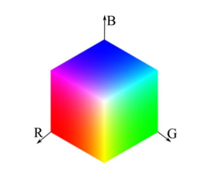
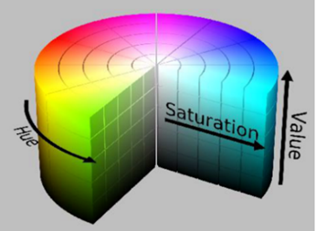
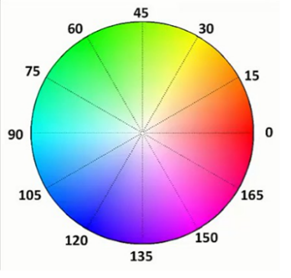

|
类型 |
分割 |
|
描述 |
通过阈值范围生成颜色模型，支持RGB和HSV颜色空间   RGB HSV
 别名：ZV_ClrGenModel |
|
语法 |
ZV_ClrGen(mod,name,colorType,low1,high1,low2,high2,low3,high3)
参数： mod：ZVOBJECT类型，输出，生成的颜色模型 name：模型名称，字符串，不能为空即"",也不能为"?" colorType：颜色色系，0-RGB色系空间，1-HSV色系空间 low1：低阈值，RGB空间：R通道，范围[0,255]，HSV空间：H通道，范围[0,180] high1：高阈值，RGB空间：R通道，范围[0,255]，HSV空间：H通道，范围[0,180]，H通道是360°的色相环，参数表示为0-180，因参数表示的特殊性，high1可以小于low1，表示180附近跨区间，即[low1,high1+180] low2：低阈值，RGB空间：G通道，范围[0,255]，HSV空间：S通道，范围[0,255] high2：高阈值，RGB空间：G通道，范围[0,255]，HSV空间：S通道，范围[0,255] low3：低阈值，RGB空间：B通道，范围[0,255]，HSV空间：V通道，范围[0,255] high3：高阈值，RGB空间：B通道，范围[0,255]，HSV空间：V通道，范围[0,255] |
|
适用控制器 |
支持ZV功能或者5系列以上的控制器 |
|
例子 |
ZVOBJECT clr_model ZV_ClrGen(clr_model,"red",0,230,255,0,20,0,20) '在RGB颜色空间生成红色的颜色模型 |